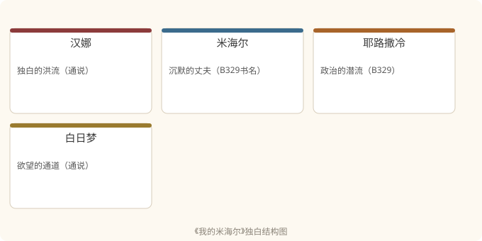

我的米海尔
一、基本信息
| 作者 | 阿摩司·奥兹 |
|---|---|
| 成书/出版 | 1968年（Britannica B329：My Michael (1968)） Amos Oz — Encyclopaedia Britannica（百科全书） |
| 国别/地区 | 以色列 |
| 时代 | 现当代 · 20世纪60年代末 |
| 体裁 | 长篇小说 |
| 语言 | 希伯来语 |

《我的米海尔》独白结构图（主题·结构图）
二、创作背景
Britannica（B329）：My Michael (1968)——Britannica 列举。
Britannica（B329）：奥兹——'in whose works Israeli society is unapologetically scrutinized'。
题材（通说待核）：汉娜的独白——对地质学家丈夫米海尔的想象与疏离。
三、内容脉络
（通说待核——B329未载剧情）汉娜的第一人称独白与白日梦。
（通说待核）耶路撒冷的阿拉伯邻居双胞胎意象。
四、主要人物表
| 人物 | 身份 | 说明 |
|---|---|---|
| 汉娜 | 叙述者 | （通说待核，B329未载） |
| 米海尔 | 丈夫 | （B329 书名人物） |
五、主题与艺术特点
- 婚姻内部的疏离（通说待核）。
- 女性欲望的书写（通说待核）。
- 耶路撒冷的政治潜流（B329：society scrutinized 语系）。
六、影响与评论
- Britannica：奥兹作品序列（B329）。
Amos Oz — Encyclopaedia Britannica（百科全书） - Britannica：'unapologetically scrutinized'（B329）。
Amos Oz — Encyclopaedia Britannica（百科全书）
七、阅读建议
难点
- 女性独白的不可靠性。
- 1950年代耶路撒冷背景。
- 《我的米海尔》中译本（译林出版社等——通说待核）。
- 希伯来文原版。
奥兹早期首选；与《爱与黑暗的故事》对读。
八、待核实
- 汉娜/米海尔人名核对（B329未载细节）。
- 1968年出版（Am Oved说）待核。
- 双胞胎意象细节待核。